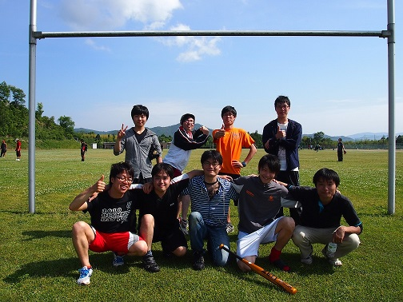

ソフトボール大会
5月25日に物理科学科ソフトボール大会が行われました。チーム名は"ビームライン久保"。放射光物性・物理研究室から2人の助っ人を向かえて試合に臨みました。朝は少し雲がかかった空模様で肌寒い天候となりましたが、次第に雲の間から日差しが見えるようになり、お昼には晴天に恵まれました。練習不足のせいか、はじめはミスが目立ちましたが、徐々にチームの足並みがそろい上位リーグ進出！しかしながら、午後からは疲れが見え始め、上位リーグ1回戦敗北に終わりました。夜は焼肉屋で試合の打ち上げを行いました。

ソフトボール参加メンバー チーム名「ビームライン久保」